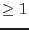

| Parameter | Mand | Type | Default | Constraints |
| inpdirectory | no | string | none | |
Directory path-name of the input files directory - defaults to the current directory.
|
| outdirectory | no | string | none | |
Directory path-name of the output files directory - defaults to inpdirectory
|
| boxscale | no | int | 2 | boxscale |
Sliding box size for detection by omdetect
|
| contrast | no | real | 0.001 | contrast |
Contrast parameter for the source detection algorithm
(it is O.K. if
|
| maxscale | no | int | 1 | maxscale |
Maximum power of 2 to search to by omdetect
|
| nsigma | no | real | 6 | nsigma |
Number of  for source detection by omdetect for source detection by omdetect
|
| smoothsize | no | real | 64 |  smoothsize smoothsize |
Smooth size (in pixels) used for smoothing image and background by omdetect
|
| srcradius | no | real | | srcradius |
Radius of the source extraction circle. If it is negative, it is expressed in
pixels, and its value will be fixed during the extraction of counts. If it is
positive, it is expressed in FWHMs, and its value could be reduced by
omregion if there is any contaminating source near by the target.
|
| bkginner | no | real | 1.2 | bkginner |
Inner radius of the background annulus in terms of source radius (srcradius)
|
| bkgouter | no | real | 1.8 | bkgouter |
Outer radius of the background annulus in terms of source radius (srcradius)
|
| timebinsize | no | real | 10 | timebinsize |
Size of the time bins (in seconds) for the time series files
|
| bkgfromimage | no | boolean | ``no'' | bkgfromimage=yes/no |
Condition for using the background obtained from the accompanying imaging
data (passed to the task omlcbuild)
|
| psfphotometryenabled | no | boolean | ``no'' | psfphotometryenabled=yes/no |
Condition for using PSF-fitting for measuring the photometric parameters of the
source by the task omdetect
|
| maxrawcountrate | no | real | 50 | maxrawcountrate |
A count-rate threshold used for limiting the number of sources
processed with the PSF-photometry method, required by omdetect
|
| ignoremod8noise | no | boolean | ``no'' | ignoremod8noise=yes/no |
Condition for ignoring the information about the presence of the modulo-8
noise around the source (if it is found)
|
| subtractbkg | no | boolean | ``yes'' | subtractbkg=yes/no |
Condition for background subtraction
|
| rawattitude | no | integer | 1 | 0:2 |
Specifies the usage of attitude data by the task omprep:
if set to 0, the attitude data is used according to the system
variable SAS_ATTITUDe (either RAF or AHF); if set to 1, the raw attitude data (RAF)
averaged over the first 20 seconds of exposure are used, if set to 2 then the raw atitude
data are used averaged over the entire exposure. If the tracking history file
is not found then the parameter is reset to 2.
|
All parameters are optional.
| Parameter | Mand | Type | Default | Constraints |